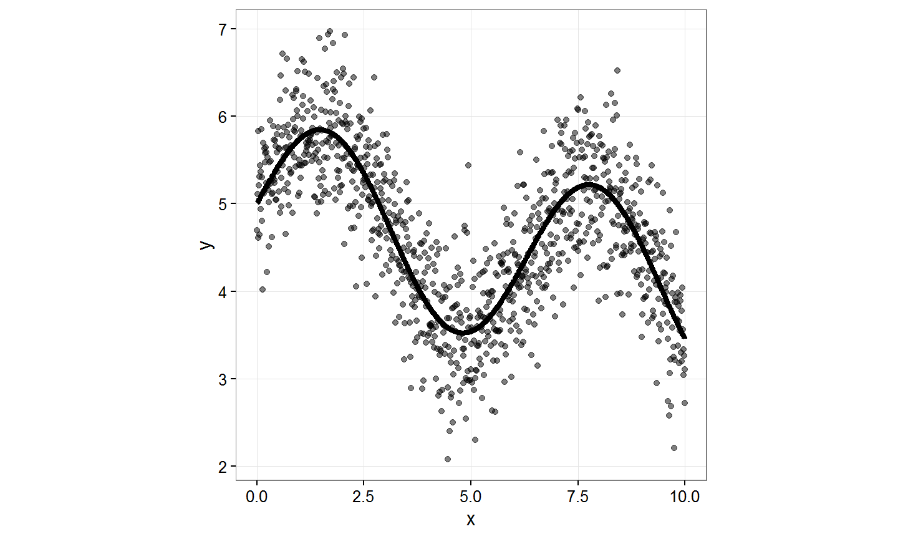
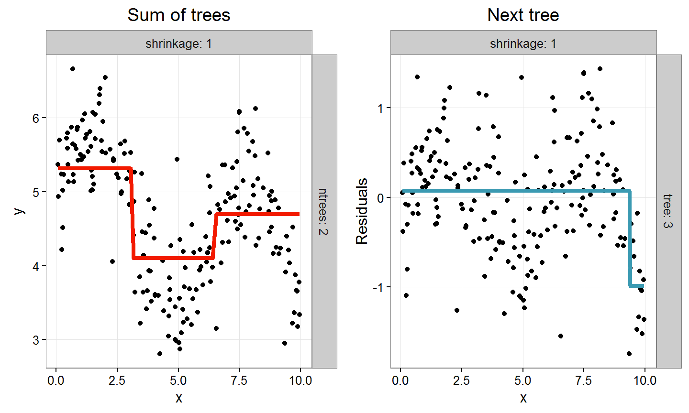
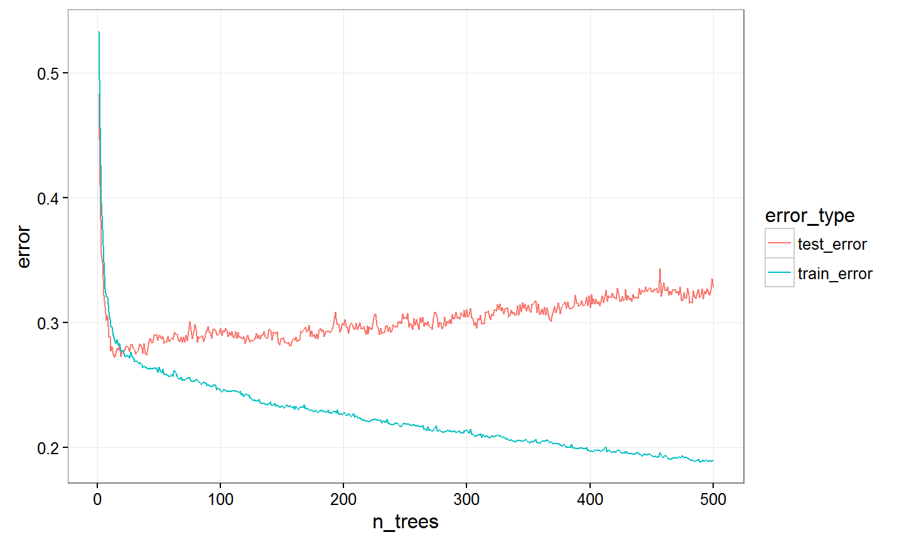
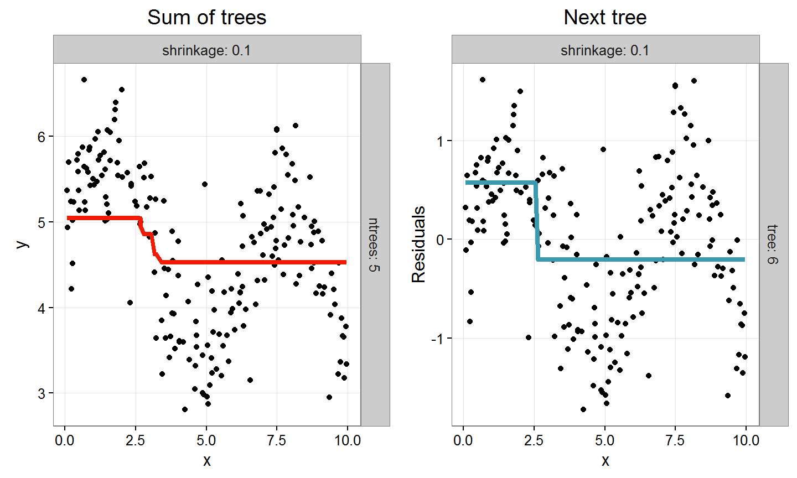
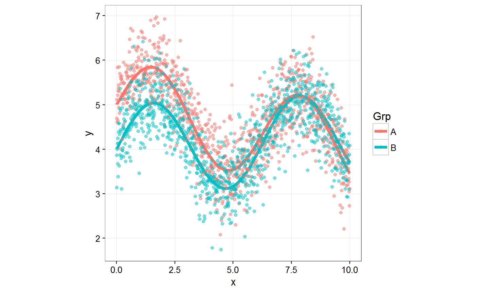
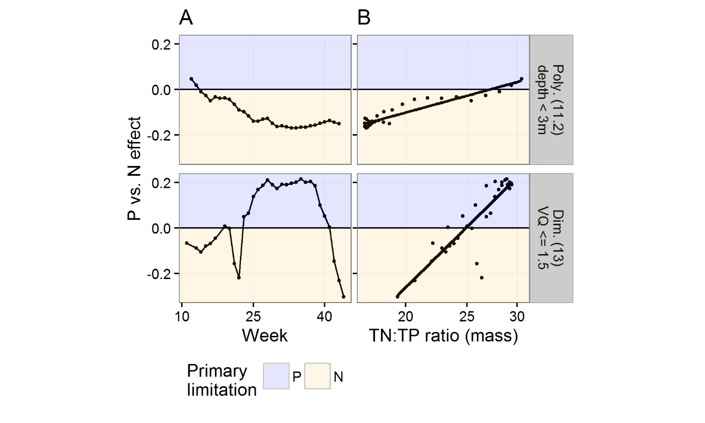

- Background: who am I, what do I work on?
- What are boosted regression trees?
- How to fit and use them in R
- How have I used them in my work
4th April 2016
Outline
Background
Lakes, phytoplankton, eutrophication

Phytoplankton
C106 N16 P1 ≈ elemental ratio

Sampling
- Water samples
- Chemical analysis for N and P
- Measure and count phytoplankton
- Biovolume

Annual averages

Seasonal patterns

What are boosted trees?
An example
Estimate unknown function
Simulate some data

With one predictor a tree can be represented as a piecewise function

Zero trees - (single split)

1 tree

2 trees

3 trees

4 trees

5 trees

6 trees
7 trees

0 - 3 trees

> Lots of trees

When to stop?
Use test data

Test vs. training error

Optimum no. trees
Still wiggly
Lower the learning rate (shrinkage)
Zero trees, LR = 0.1

1 tree, LR = 0.1
2 trees, LR = 0.1

3 trees, LR = 0.1
4 trees, LR = 0.1

5 trees, LR = 0.1

6 trees, LR = 0.1

7 trees, LR = 0.1
0 - 3 trees
Test error

Optimum trees; LR = 1 vs. 0.1

Interaction depth

Fitting a BRT with gbm()
Data
## Source: local data frame [2,000 x 3] ## ## x Grp y ## (dbl) (fctr) (dbl) ## 1 0.01 A 4.695773 ## 2 0.01 B 3.135812 ## 3 0.02 A 5.109820 ## 4 0.02 B 3.864737 ## 5 0.03 A 4.609181 ## 6 0.03 B 3.999034 ## 7 0.04 A 5.833630 ## 8 0.04 B 4.128766 ## 9 0.05 A 5.209733 ## 10 0.05 B 4.242548 ## .. ... ... ...
Two groups (interaction.depth = 1)
interaction.depth = 1 means no interaction!
brt_id_1 <- gbm (y ~ x + Grp, data = dat2
, n.trees = 1000
, shrinkage = 0.1
, interaction.depth = 1
, cv.folds = 5)
Model diagnostics
brt_id_1
## gbm(formula = y ~ x + Grp, data = dat2, n.trees = 1000, interaction.depth = 1, ## shrinkage = 0.1, cv.folds = 5) ## A gradient boosted model with gaussian loss function. ## 1000 iterations were performed. ## The best cross-validation iteration was 471. ## There were 2 predictors of which 2 had non-zero influence. ## ## Summary of cross-validation residuals: ## 0% 25% 50% 75% 100% ## -1.9250430 -0.3359167 0.0943870 0.5125533 2.1765444 ## ## Cross-validation pseudo R-squared: 0.519
best_iter <- gbm.perf(brt_id_1) print(best_iter)
## [1] 471
summary(brt_id_1, n.trees = best_iter)
## var rel.inf ## x x 93.546435 ## Grp Grp 6.453565

plot(brt_id_1
, n.trees = best_iter
, i.var = 1:2, layout = c(2, 1))

, interaction.depth = 1
dat2$y_hat_id_1 <- predict(brt_id_1, n.trees = best_iter)

Two groups (interaction.depth = 2)
brt_id_2 <- gbm(y ~ x + Grp, data = dat2
, n.trees = 1000
, shrinkage = 0.1
, interaction.depth = 2
, cv.folds = 5)
best_iter2 <- gbm.perf(brt_id_2, plot.it = F)
, interaction.depth = 2
dat2$y_hat_id_2 <- predict(brt_id_2, n.trees = best_iter2)

Summary boosted trees
- Sum of long chain of simple trees iteratively fit to residuals
- n.trees = how many trees to fit
- shrinkage = learning rate ≊ regularization
- interaction.depth ≊ tree depth ≊ base learner complexity
- Optimal size and complexity from test error (out of bag, OOB)
- true test set or cross-validation
- R package gbm shown here - others available
- Checkout "The Elements of Statistical Learning: Data Mining, Inference, and Prediction" Hastie, T., Tibshirani, R., & Friedman, J. (2011)
- legit .pdf copy available free online
How I used boosted trees
Lakes, phytoplankton, seasonal biovolume, effect of N & P

Natural lakes in Germany
400+ lakes, > 5000 rows of data

Fit BRT with gbm()
set.seed(07052015)
crs <- parallel:::detectCores() / 2
gbm_Total.5 <- gbm(Total ~ Week + log10_TN + log10_TP
+ log10_Depth + Seen.Subtyp
, distribution = list(name="quantile", alpha=0.5)
, n.trees=10000, shrinkage = 0.01
, cv.folds = 5, interaction.depth = 5
, data = boost_dat_padded, n.cores = crs)
Nutrient regimes

Nutrient regimes

Seasonal biovolume
P vs. N effect

Summary
- Boosted trees -> complex patterns and interactions
N:P ratio effects emerge from "unstructured" model
- Sum of long chain of simple trees iteratively fit to residuals
R package gbm - others available
- Checkout "The Elements of Statistical Learning: Data Mining, Inference, and Prediction" Hastie, T., Tibshirani, R., & Friedman, J. (2011)
- legit .pdf copy available free online
Follow-up slide 16.04.2016
- In addition to "Elements …" - http://statweb.stanford.edu/~tibs/ElemStatLearn/
There is also "An Introduction to Statistical Learning with Applications in R" Gareth James, Daniela Witten, Trevor Hastie, Robert Tibshirani - http://www-bcf.usc.edu/~gareth/ISL/
- You can now set your own cross validation sets in gbm() using the argument
fold.id- this is new since March 2015 and not documented in the cran hosted pdf manual (but is in the package .rd files)